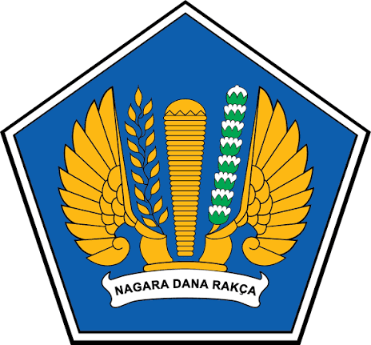

KEMENTERIAN KEUANGAN RI
Kantor Pelayanan Kekayaan Negara dan Lelang (KPKNL) Metro merupakan unit vertikal di bawah naungan Direktorat Jenderal Kekayaan Negara (DJKN).
Lihat Layanan Peminjaman Kendaraan ↓Fasilitas peminjaman kendaraan operasional kantor ini khusus diperuntukkan bagi Pegawai / Pejabat KPKNL Metro dalam rangka pelaksanaan tugas dinas resmi.
Memuat data kendaraan...